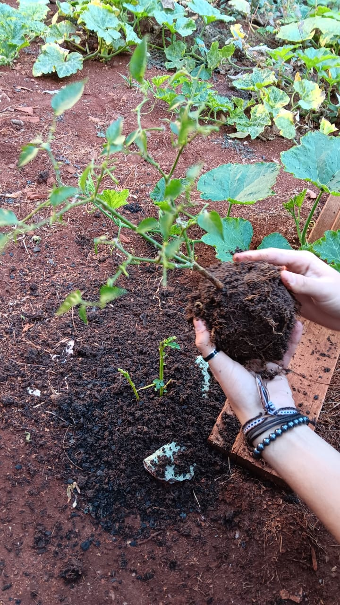

Olá, me chamo Daniel Delfino de Carvalho, e faço parte da turma do 2°C no Colégio Cívico Militar Duque de Caxias.
Estou utilizando essa página para mostrar o avanço e os processos de produção do meu grupo no cultivo da Pimenta Biquinho.
As vantagens de escolher a Pimenta Biquinho, é que:
Semana 01-
Realizamos a retirada das pimentas já maduras da muda.
"Fabricamos" também um insetscida orgânico, para a retirada dos pulgões que haviamos observado na muda, o fizemos com, detergente, água e vinagre.
Semana 02-
Replantamos a muda; retiramos o excesso de terra e após isso, lavamos suas raízes para replantarmos a muda; lavamos o vaso e e por fim adicionamos o substrato para o plantio da muda.
Realizamos este processo, pois, chega um momento em que os nutrientes e vitaminas de que a planta retira do solo, chegam ao fim, e por isso replantamos a muda em um novo solo, para receber os nutrientes das quais a mesma precisa.
Infelizmente, ao regarmos a planta, deixamos nossa planta cair, o que pode ter influenciado em seu desenvolvimento.

Semana 03-
Observamos que a muda replantada estava com seus galhos e folhas secas. Retiramos as folhas secas, e a partit de um galho saúdavel, realizamos o metódo de estaquia.
Estaquia é um metódo de propagção vegetativa, na qual, retiramos um pequeno galho entre os nós da muda, e o plantamos em um novo ambiente (lembrando que não é possível realizar a ESTAQUIA com todas as plantas).
Realocamos uma de nossas mudas para um ambiente mais ensolarado, para fazermos a comparação entre uma planta sem o controle de luminosidade e a outra com o controle.
Semana 04-
Após uma semana, observamos que algumas mudas que estavam sem controle de luminosidade estava com excesso hidríco e apresentavam alguns fungos.
Enquanto, a muda da pimenta biquinho que estava com o controle de luminosidade, apresentava escassez de água.